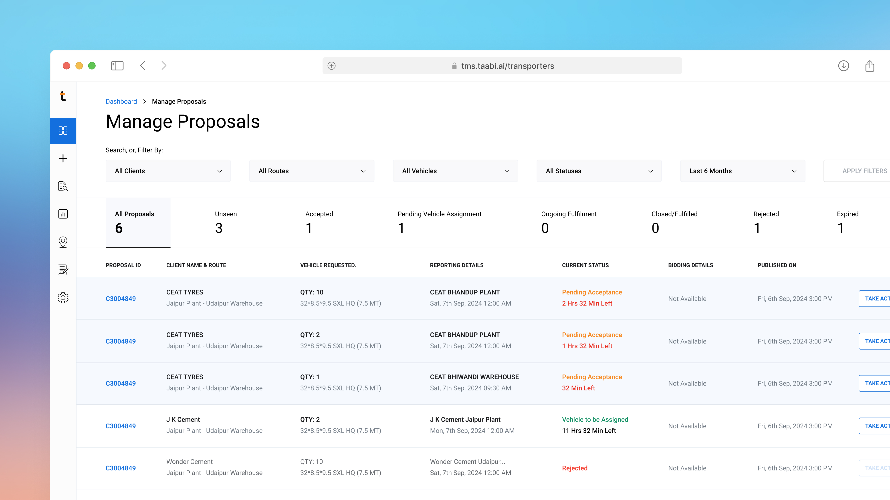

Context
The Transportation Management System (TMS) is a logistics solution used by enterprise logistics team and the transporter partners to plan and execute shipments. I led the 0→1 feature research and design and post-MVP redesign on the TMS platform for Enterprise logistics team and Transporter partners for indent acceptance and vehicle assignment. The solution reduced the dispatch delays and removed the support dependency for operational updates.
Problem Statement
The challenge was to translate a real-world operational activity — confirming vehicle availability and preparing for dispatch. The Dispatchers could request multiple vehicles in single indent while the transporters might only have partial fleet availability. The system should support those operational realities without disrupting the shipment planning or dispatch timeline.
Objective
Design a clear and reliable workflow that allows transporters to respond to indents, assign vehicles efficiently, and ensure the vehicles reach the right sites for loading without operational delays.
Design Decisions
I created the flow into step-by-step layout that clearly separates the actions to be performed by transporters into acceptance / rejection of the indent and assigning the vehicles to accepted indents. I've designed these interactions carefully since this is the most critical point for users in the flow.
The entire flow from Indent to the Transporter
Additional Features
To support operational realities, I introduced Partial Acceptance, allowing transporters to fulfill only the vehicles in their availability.
A diff showing the acceptance flow of proposals for transporters
Post MVP Iteration with Redefined Solution
After launching the MVP, in our early customers, my team and I started receiving frequent requests to modify driver and vehicle details while updating driver license, vehicle numbers, in vehicle registration numbers. To understand the issue better, I got on calls with our customers to understand the issue better.
Gathered Feedbacks
Refined Solution
To address the above key feedbacks, I redesigned the system with the following updates:
As part of this update, I also redesigned the Vehicle Details section on the enterprise side. It now provides access to vehicle documents and serves as an entry point to edit and manage vehicle information.
impact
The redesign produced measurable operational improvements:
Reduced dependency on supporting teams for updating details
Reduced the turnaround time between change request and the movement
key learnings
Logistics workflows are always dynamic and unpredictable.
The simplest designs hold a lot of complexity:
My job as a designer is to abstract this complexity and bring simplicity to users. Elegant solutions require a lot of exploration and iteration.
Post-MVP feedback is a part of the design process:
Post-launch revealed edge cases that could not be predicted during planning. The redesign came from close reading of usage, not assumptions.